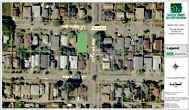

Site History
We are blessed to have rich cultural heritage in Ballard. Modern Ballard was built by Scandinavians (and other immigrants) using shingle mills, fishing, and logging as the primary economic engines.
An old Victorian house was located on the south lot of our site (Google Maps and Microsoft’s Live Local). A grocery store was located on the north lot. The grocery store was built in 1905 and operated as a neighborhood market until 1954. The last grocer was William (“Bill”) Boutin who operated the store as Boutin’s Grocery from 1941 to 1954.

Older residents have described the store as similar to a modern convenience store, stocked with essentials such as milk, bread, and eggs. According to several residents who were children when the store closed, the store also had a large selection of candy and confections along one counter stored in large glass jars. Another older resident recalls getting ice cream at the store. Yet another 81 year-old life-long Ballard resident says that the grocery store was merely a front for a bootlegging operation. He claims not to availed himself of any tax-free booze, but couldn’t add any substantiating evidence.
The store was closed in 1954 and stood empty until it was torn down in 1964. It probably couldn’t compete with larger grocery stores nearby.
The south lot had a beautiful old Victorian house built in 1891. A widow by the name of Sophia Brandt (deceased husband was ‘Marinus’ or ‘Marinos’, depending on which Polk directory you consult). She formerly lived at 5225 Palatine until she bought the property in 1937.

In 1951, she tore down the old house and built the existing house. She is shown as the occupant until at least 1955.
In 1956 a Marvin Brandt, a clerk at the City Water Department is shown as the occupant; Marvin was Sophia’s son. Marvin didn’t drive and walked everywhere, pulling a wagon behind him for groceries. Marvin was visited often by his sister Florence Spalding and her son George.
In the early 1990s, Marvin died and the house was inherited by an out of state relative, Frank Nowadnick. The house sat unoccupied until the city acquired it for use as a park.

There was a stream ran either through nearby. Patty Skommesa lived at 1710 NW 62nd for many years, as did her ancestors. She says that a stream did indeed run between her house and the one to the west of it on the property line, according to her father.  Apparently, there was a spring near Salmon Bay Park that ran into a stream down to Salmon Bay.
[Sources: Folios from the Puget Sound Regional Archives, the Polk Directories, and oral interviews with current and former Ballard residents]
Additional historical information:
Ballard Historical Society
History Link
Ballard Chamber of Commerce